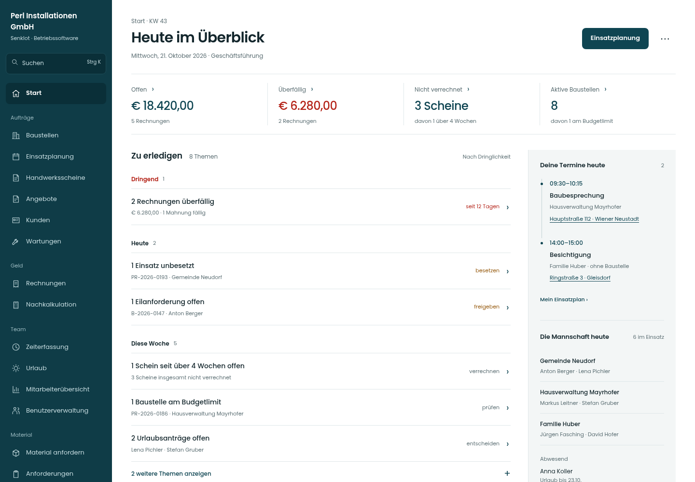
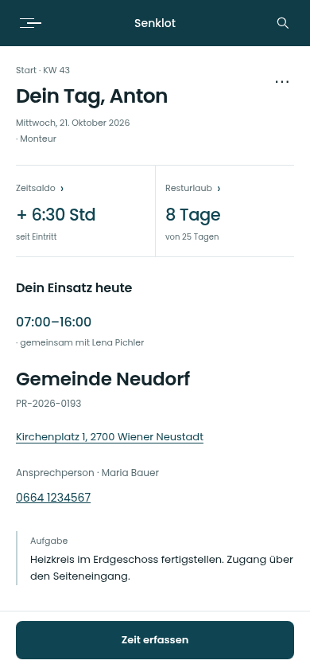
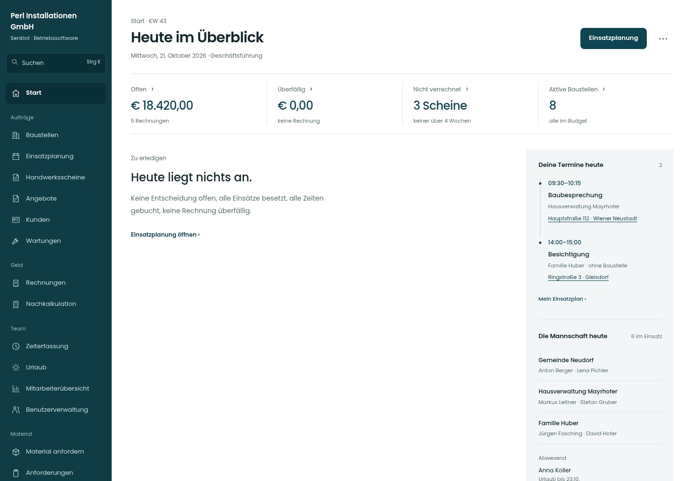

Lot · Gestaltungsstudie · 21.10.2026
Ein klarer Start in den Tag.
Die Linie der neuen Akten, übertragen auf die Startseite: Arbeitsinhalt links, Tageskontext rechts. Wenige Flächen, leichte Zahlen und eine klare Reihenfolge. Entwurf mit fiktiven Beispieldaten; die Live-App ist unverändert.
Geschäftsführung
Kennzahlen, priorisierte Themen, eigene Termine und die Mannschaft.
Entwurf öffnen ›

Mobiler Screen ›
Monteur
Eigener Einsatz mit Aufgabe, Kontakt und Rüstliste. Zeit erfassen bleibt mobil erreichbar.
Entwurf öffnen ›

Ruhiger Tag
Eine klare Leermeldung. Termine und Mannschaft bleiben sichtbar.
Entwurf öffnen ›

Die HTML-Seiten sind ein Gestaltungsprototyp. Die vollständigen Fachansichten, Rollenfilter und Datenzustände gehören weiterhin zur App. Hinweise zur funktionalen Übernahme stehen in README.md.